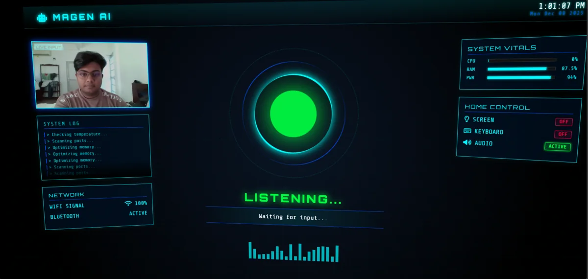
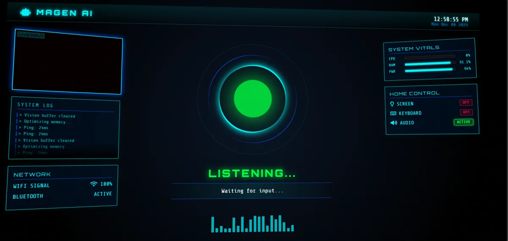

Desktop automation · Computer vision
MAGEN.
A voice-driven Windows assistant connecting conversation, camera input, and practical desktop controls.
- Status
- Local desktop prototype
- Context
- Multimodal assistant
- Technology
- Python · Flask · Gemini · OpenCV · Windows APIs

Problem
A conversational assistant becomes more useful when it can act on the computer around it and respond to visual context, rather than only return text.
Solution
MAGEN routes spoken commands to Windows controls or a Gemini conversation. A Flask interface exposes camera streaming, assistant status, and system telemetry. Separate modules handle speech, vision, memory, and device interactions.
Architecture
- 01Voice / camera
- 02Command routing
- 03Gemini or Windows control
- 04Speech + Flask dashboard
My contribution
- Integrated voice and camera inputs with Gemini and local Windows commands.
- Added Flask camera streaming, system telemetry and volume and brightness controls.
Engineering challenge
The voice loop runs alongside the Flask interface. Windows audio control also needs COM initialization in the worker thread, a concrete integration detail handled in the source.

Results & demo
The Flask dashboard shows camera and system telemetry alongside voice-controlled Windows actions.
What I’d improve
Add repeatable tests for voice-command routing and device-control fallbacks on different Windows setups.
Requires Windows, local dependencies, and a configured Gemini API key. Some commands open system settings rather than directly change connectivity. No autonomous smart-home deployment is claimed.